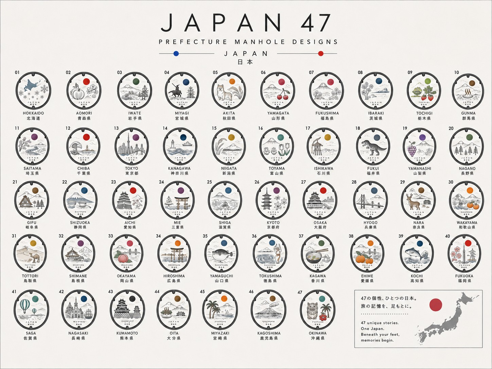

Uma ponte ponderada
entre o Japão
e a Europa.
A ENN Japan constrói parcerias entre o Japão e a Europa através do comércio, do fornecimento de ingredientes alimentares, da entrada em mercados e da estratégia de vendas.
Ligar pessoas e culturas através do mar — essa intenção vive numa única palavra japonesa: en.
No Japão existe uma cultura que valoriza o en: a crença de que um encontro nunca é mero acaso, mas algo que nasce da ligação entre pessoas. O nosso negócio assenta nessa mesma crença.
Cada negócio começa com um único en. Construímos a relação antes da transação e levamos ao mundo apenas aquilo pelo qual empenhamos o nosso próprio nome. É aí que começa a ENN Japan.
Comércio e fornecimento
貿易Levamos o verdadeiro valor dos produtos japoneses ao mundo — honrando cada região e produtor enquanto unimos o Japão e a Europa.
Entrada em mercados
進出Apoiamos empresas japonesas na expansão internacional — do Japão para a Europa e da Europa para o Japão — com redes locais e experiência prática para uma entrada sustentável.
Estratégia de vendas
戦略Parcerias que começam pela confiança. Fazemos mais do que apresentar pessoas e empresas — compreendemos o valor de cada lado e assumimos a responsabilidade pela ligação certa.
Tratamos de tudo, desde a construção de relações com as regiões produtoras até ao fornecimento, levando ao mundo as histórias dos produtores e artesãos.
Como parceira estratégica europeia da ENN Japan, a 1716 Industries lidera as operações e a construção de rede nos mercados da UE e do Reino Unido.

Uma viagem por 47 prefeituras
começa em Quioto.
A Society 47 é um projeto-piloto Japão–Reino Unido criado para levar ao mundo as paisagens e as culturas do Japão.
O seu primeiro capítulo, «Kyoto No.26», é uma coleção inicial construída em torno de Quioto, o coração da cultura do matcha.
A começar com um lançamento no Kickstarter no Reino Unido, parte numa viagem pelas histórias das 47 prefeituras.